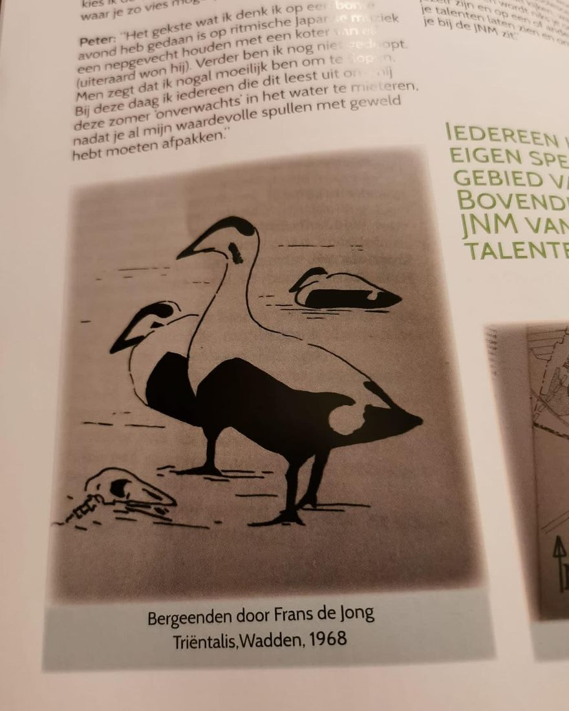

Eider, geen bergeend
31 oktober 2021 · JNM
- Op de foto
- Eider
- Het ging over
- Bergeend

Ook de @jnm_natuur zit er wel eens naast. In de nieuwe Trias, het tijdschrift van de JNM, worden de Eiders als Bergeenden bestempeld. Toch zonde…

Ook de @jnm_natuur zit er wel eens naast. In de nieuwe Trias, het tijdschrift van de JNM, worden de Eiders als Bergeenden bestempeld. Toch zonde…